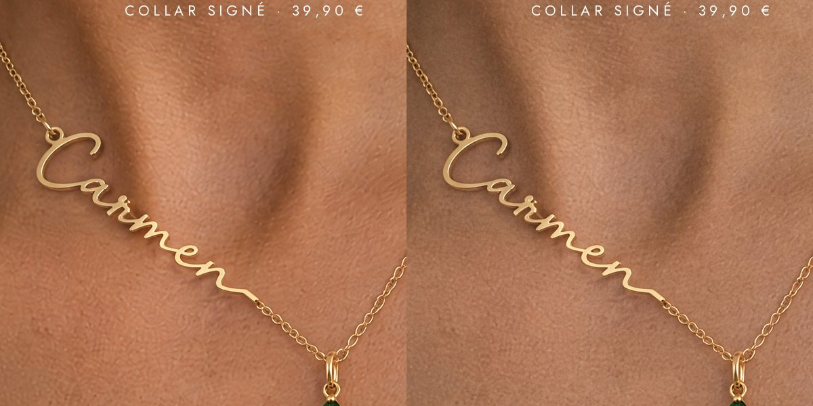
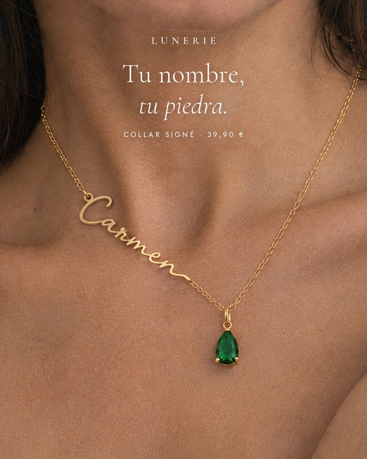
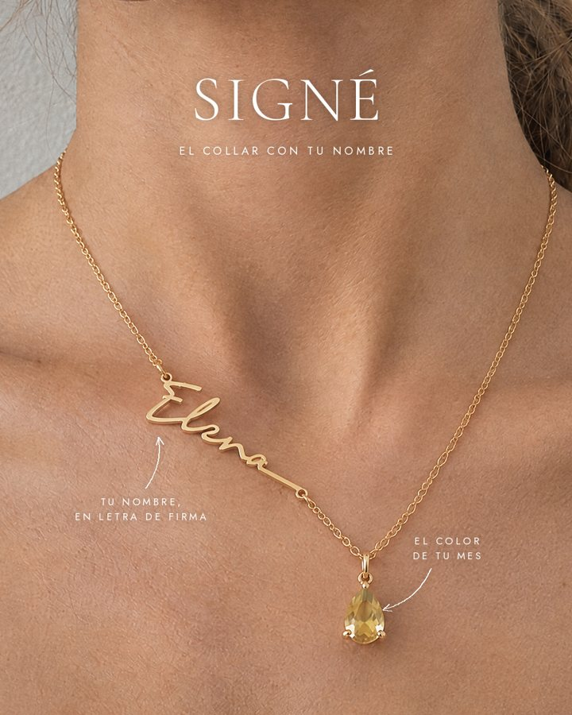
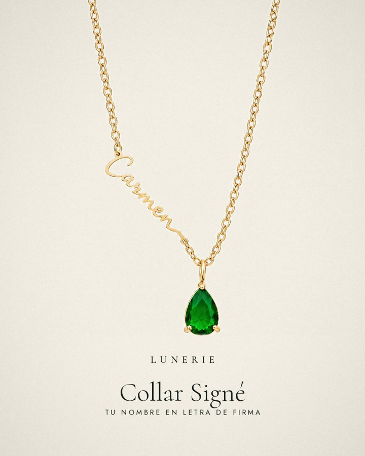
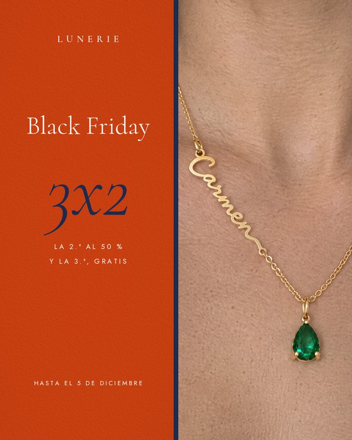
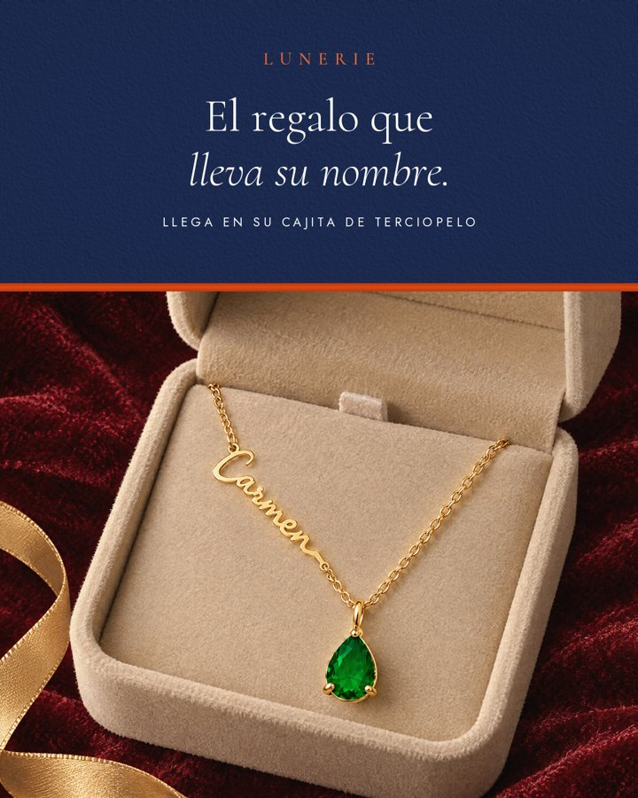
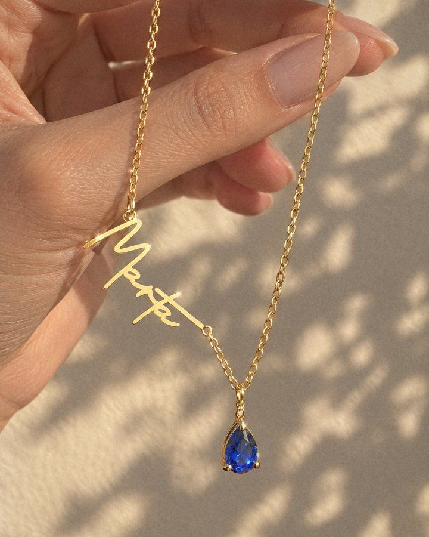

Lunerie✦
El manual de la marca: quién queremos ser, cómo hablamos, cómo se ve todo lo que publicamos y qué hace falta para crecer. Todo lo que hagamos (la tienda, Instagram, los anuncios, la cajita) sale de aquí.
Versión 2.4 · 19 de noviembre de 2026 · propuesta para revisar con Edu
Dónde queremos llegar
La gente joven ya no quiere la misma joya que todo el mundo. Elige piezas que llevan un nombre, una inicial, una fecha o la piedra de un mes, y el collar con nombre sigue creciendo. En España hay pocas marcas que hagan esto con diseño cuidado y a un precio de regalo.
| Marca | Qué hace | Precio | Cómo se ve |
|---|---|---|---|
| Customima | Joyas grabadas para la familia (el colgante de patitos), de una joyería con 24 tiendas. Plata, oro y acero, envío en 48 h. | 24-325 € | Fotos de familia, tono emocional, ofertas grandes, la fundadora en el chat. |
| Singularu | Joyería de moda con iniciales. | Moda, accesible | Comercial: rosa intenso, «−50 %» gigante. |
| Merci Maman, Abbott Lyon, Missoma | Personalizadas con mucho cuidado de marca (Merci Maman: grabado a mano y su caja naranja). | Medio-alto | Editorial y cálido, pero hablan desde Londres. |
| Etsy, Shein, AliExpress | Collares con nombre muy baratos. | Muy bajo | Sin marca, esperas largas y fotos de catálogo. |
| Lunerie | Personalizadas para regalar, con diseño de joyería cara, en español y de tú a tú. | 20-50 € | Editorial, limpio, con fotos que parecen fotos. |
La idea de la marca
Joyas con nombre propio.
«Tener nombre propio» es ser alguien, no uno más. Cada pieza de Lunerie es de una persona: lleva su nombre, su inicial, el color de su mes o una fecha que le importa. Puede ser la tuya, o la de alguien a quien quieres. El nombre en letra de firma es nuestro sello: está en el collar, en las fotos, en la tarjeta y en los vídeos.
Por decidir. Otras ideas que se han valorado: «Tu historia, en una joya», «Joyas que dicen quién eres». Descartadas por Edu: «Lo que se escribe a mano» (la piedra del mes no se escribe) y «Lo tuyo, en una joya». La frase recomendada sale de la idea de Edu: vale para comprársela una misma y para regalar.
Cómo hablamos
De tú, como una amiga. Primero para ti; cuando es para regalar, «su nombre». Cálida, cercana y sin gritar. Si una frase funciona sin un adjetivo, se quita.
AnuncioTu nombre, tu piedra.
Post para tiTu camiseta blanca necesitaba esto.
Post para regalarPara tu madre, con su nombre. Y otro para ti.
OfertaBlack Friday · 2.ª pieza al 50 % · 3.ª gratis
Tarjeta en la cajaHecha para ti.
Identidad visual
La marca se reconoce por estas piezas. Se usan siempre igual, en la tienda, en Instagram, en los anuncios y en el paquete.
Su nombre, su piedra.
Cormorant fina para titulares. La segunda línea, o una palabra, en cursiva.
Collar Signé · 39,90 €
Jost para el texto y para etiquetas pequeñas en mayúsculas espaciadas.
Carmen
La firma. Solo para nombres: es la letra del collar. Nunca para frases.
Fotografía
La foto es el 80 % de la marca. Las de IA delatan su origen por cosas concretas, y ahí es donde hay que mirar antes de publicar nada.
De la barbilla al pecho, con la joya grande y en el centro. Sin brazo ni reloj de relleno: que se vea qué vendemos. Piel cálida, la cara cortada por debajo de la nariz.
La mano sujetando el collar, con sol y sombras. Funciona sin texto.
Sobre fondo claro o dentro de su cajita, con el nombre bien legible.

Plantillas de Instagram y anuncios
Encuadre muy cerrado en la joya, texto blanco y pequeño sobre la piel sin franjas ni degradados, flechas finas que señalan la pieza y las promos en un bloque de color con relieve, partido con la foto. En los formatos verticales, el texto va entre el 14 % y el 65 % del alto, donde no lo tapan los botones de Instagram. Las seis salen con un script, sin coste.






Lo que nos hace reconocibles
Las marcas grandes se reconocen sin ver el logo: la caja naranja de Merci Maman, el azul de Tiffany. Estas son las nuestras.
La colección
Para ser la referencia, la personalización tiene que ser toda la tienda, no un producto. Los relojes y el resto se quedan como complementos.
El collar con su nombre en letra de firma y la lágrima de su mes.
El anillo Étoile y los pendientes Larme con la piedra de su mes, del mismo proveedor que el collar: el conjunto a juego.
La inicial, para quien prefiere algo más discreto que el nombre.
Varios nombres en una pieza: madre e hijos, hermanas.
Contenido
En las 12 últimas publicaciones de Olivia, 6 son para una misma, 4 para regalar y 2 de Black Friday. Si a alguien le gusta una joya para ella y el texto dice «para tu madre», pasa de largo. Por eso «para ti» va primero.
Para ti. Porque te apetece y no hace falta una ocasión. Con qué ropa queda, cada día, tu nombre en tu cuello.
Para regalar. A tu madre, tu hermana, tu mejor amiga, tu abuela. Siempre con la puerta abierta: «y otro para ti».
La pieza. Novedades, anotadas con flechas, de cerca, cómo queda cada nombre.
Promos. Black Friday, Navidad, el Día de la Madre, en un bloque de color.
Para escalar
Registrar la marca Lunerie en la OEPM (clase 14, joyería). La tasa de una clase ronda los 125-150 €: hay que comprobar la de 2026. Edu, 19-nov: por ahora no.
Un banco de fotos con IA en el mismo estilo. Para cada pieza: cuello de cerca, en la mano, la pieza sola y en la cajita, generadas con fotos reales del proveedor como referencia.
La cinta o la tarjeta Lunerie dentro del paquete, como la cinta naranja de Olivia. Preguntar al proveedor si puede meter una nuestra.
Opiniones de clientas con foto. Escribir a cada clienta una semana después de recibirlo.
TikTok, con los mismos vídeos que Instagram.
Para decidir con Edu